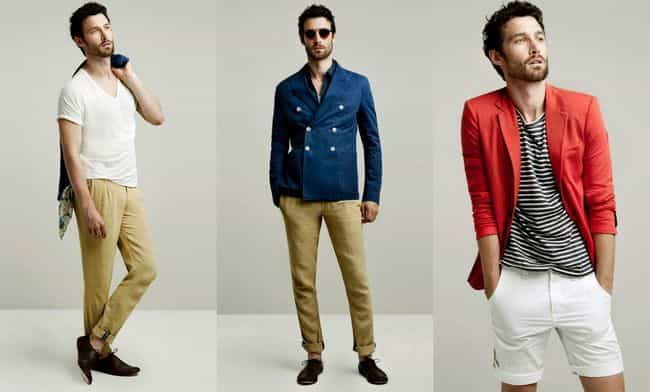
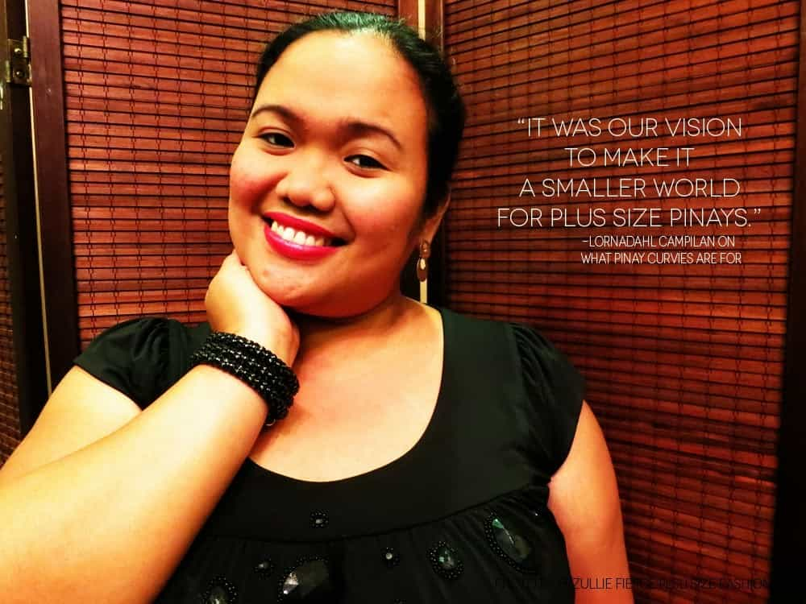
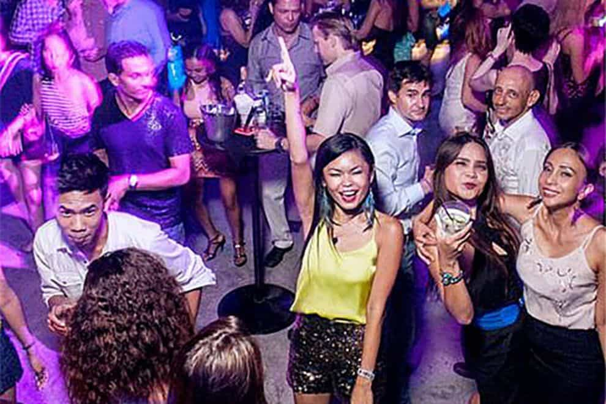
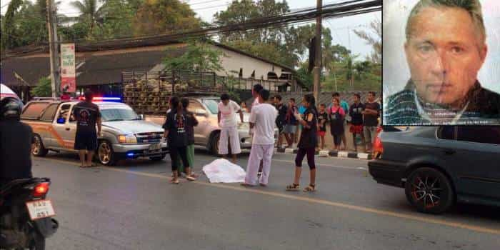

Location independent guy in his early 30s with a decade of Asia experience.


Southeast Asia, in particular Thailand and the Philippines, are promoted non stop in the manosphere as the place to go for feminine women and a red pilled life far away from the cancers of the Western world. As a young, good-looking red pilled guy in his early 30s who has lived in both places for three years in total, I’d like to provide a contrarian point of view that Southeast Asia is overhyped and not all that it’s cracked up to be.
If you aren’t a dopey all smiles, friendly 24/7 guy who prefers to keep to himself and doesn’t dress as poorly as the locals, you’ll be perceived as evil whitey incarnate who sees locals as lesser humans (their own projection) and they’ll take every opportunity to trash talk and take jabs at you to take you down a notch out of their own insecurity and inferiority complexes. This gets old quickly.
Good luck asserting your masculinity when locals are always a step away from seeing you as the evil white colonizer that tells them how to live their lives.
Le evil oppressor:

In Bangkok you pretty much can’t walk anywhere. There are either no sidewalks or they’re falling apart and are blocked by vendors. If you’re from the US and used to driving everywhere it might not bother you, but as a European who likes to walk this generally lowers my quality of living a lot.
In Manila walking around is simply not advised for security reasons alone outside of small bubbles like Bonifacio Global City.
The most expensive mall in Manila is next to a slum tier area:
For the cheapest shoeboxes built out of the shoddiest materials and the cheapest appliances you pay prices that are often above Eastern European capitals in Bangkok. In nicer areas of Manila like Makati or Bonifacio Global City, these shoeboxes even reach Western European prices and you have to look really hard for good deals.
This is due to a combination of corruption raising construction costs and locals storing all of their (ill gotten) gains in apartments. A little price comparison: Budapest vs Bangkok vs Manila.
Stubby chubby oompa loompa is the standard Filipina type. They apparently don’t handle Western diets well and a visit to a mall is like visiting a trashy Walmart back home. Cheating among locals is so rampant it makes Western women look chaste. Last but not least she’d be considered mildly mentally retarded in the West and would never rise above jobs like cleaner. If you ever go bust she won’t be a co-earner ever and ditch you asap for a better option if you don’t shape up quickly.

The nightlife is completely hooker-infested even in “better” areas where foreigners don’t commonly go, especially in Thailand where whoring is a way of life for many women. These aren’t places full of strong empowered women making as much as guys so they are happy to put out to Chad for free.

You’re on perpetual temporary visas which might be scrutinized whenever you re-enter the country to the point of being denied entry and deported if some grumpy whitey hating immigration officer dislikes your face or visa history.
If you choose to tie yourself to a local 3rd world woman you’ll have to deal with such nonsense as putting up 13k USD in a fixed deposit account for Thailand just to be able to get a visa. Never mind that this is a years worth of salary in a good white collar job in Thailand and you aren’t even allowed to work on a spousal visa.
If you need a job, chances are you’ll be pigeonholed into subsidence pay English teaching jobs. Locals don’t like foreign competition.
If you want to see the child level intellect of people of above average intelligence and employment just venture to the Philippines Reddit sub.
Thai people are pretty much completely absent from the internet outside of social media, which tells you a lot about their intellect and mental capacities.
Third world families expect financially strong family members to play big spender. While local alpha guys who take care of the extended family get treated like kings in return, don’t expect them to extend this favor to you.
You’re a white idiot from the land of the money trees, a gullible idiot to be mooched of, a mark. Her extended family will relentlessly nag her to get more favors out of you and telling them to fuck off is mostly not an option even in the unlikely case that she has your best interests in mind, as they’re most likely the only back up plan she has if your relationship ever goes south.
A lot of women already have kids from another guy and might not necessarily be open about it as shrewdness is required to survive in the overpopulated third world and you’d never know as her parents are raising it.
A vengeful ex-girlfriend of a user on a forum managed to get him blacklisted from a country by accusing him of god knows what. He ended up having to change his name and get a new passport in order to be able to get back into the country.
Thailand is one of the countries with the highest road fatalities in the world (yet trashpackers and flip-flop dude bros drive scooters with zero concern), and there are lots of sketchy deaths of foreigners leaping from their balconies.

The website Farang Deaths shows them regularly, including Alexander Cazes who was a member of Roosh’s forum.
In my time in Thailand I learnt of half a dozen deaths of acquaintances. Some died in scooter accidents getting mowed down by drunken drivers, while another allegedly jumped out of the window due to going crazy after his Thai girlfriend hooked him with the local version of meth.
In short, everything is stacked against you and the quality of living is low. I don’t recommend a visit.